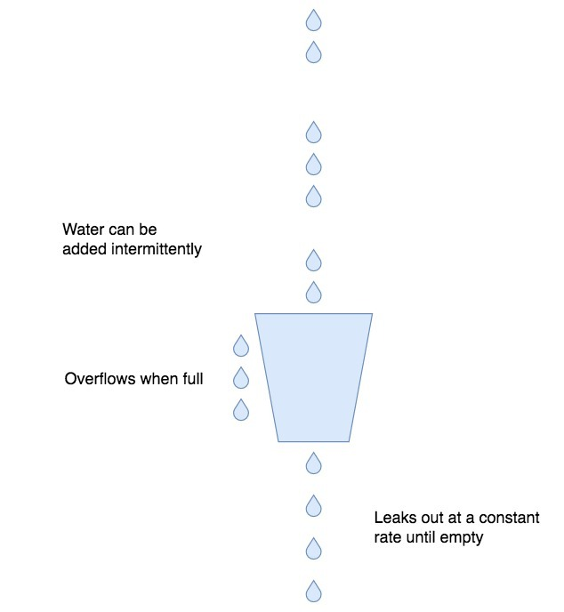

- 00 开篇词 OpenResty，为你打开高性能开发的大门.md
- 01 初探OpenResty的三大特性.md
- 02 如何写出你的“hello world”？.md
- 03 揪出隐藏在背后的那些子项目.md
- 04 如何管理第三方包？从包管理工具luarocks和opm说起.md
- 05 [视频]opm项目导读.md
- 06 OpenResty 中用到的 NGINX 知识.md
- 07 带你快速上手 Lua.md
- 08 LuaJIT分支和标准Lua有什么不同？.md
- 09 为什么 lua-resty-core 性能更高一些？.md
- 10 JIT编译器的死穴：为什么要避免使用 NYI ？.md
- 11 剖析Lua唯一的数据结构table和metatable特性.md
- 12 高手秘诀：识别Lua的独有概念和坑.md
- 13 [视频]实战：基于FFI实现的lua-resty-lrucache.md
- 14 答疑（一）：Lua 规则和 NGINX 配置文件产生冲突怎么办？.md
- 15 OpenResty 和别的开发平台有什么不同？.md
- 16 秒杀大多数开发问题的两个利器：文档和测试案例.md
- 17 为什么能成为更好的Web服务器？动态处理请求和响应是关键.md
- 18 worker间的通信法宝：最重要的数据结构之shared dict.md
- 19 OpenResty 的核心和精髓：cosocket.md
- 20 超越 Web 服务器：特权进程和定时任务.md
- 21 带你玩转时间、正则表达式等常用API.md
- 22 [视频]从一个安全漏洞说起，探寻API性能和安全的平衡.md
- 23 [视频]导读lua-resty-requests：优秀的lua-resty-_是如何编写的？.md
- 24 实战：处理四层流量，实现Memcached Server.md
- 25 答疑（二）：特权进程的权限到底是什么？.md
- 26 代码贡献者的拦路虎：test__nginx 简介.md
- 27 test__nginx 包罗万象的测试方法.md
- 28 test__nginx 还可以这样用？.md
- 29 最容易失准的性能测试？你需要压测工具界的“悍马”wrk.md
- 30 答疑（三）如何搭建测试的网络结构？.md
- 31 性能下降10倍的真凶：阻塞函数.md
- 32 让人又恨又爱的字符串操作.md
- 33 性能提升10倍的秘诀：必须用好 table.md
- 34 特别放送：OpenResty编码指南.md
- 35 [视频]实际项目中的性能优化：ingress-nginx中的几个PR解读.md
- 36 盘点OpenResty的各种调试手段.md
- 37 systemtap-toolkit和stapxx：如何用数据搞定“疑难杂症”？.md
- 38 [视频]巧用wrk和火焰图，科学定位性能瓶颈.md
- 39 高性能的关键：shared dict 缓存和 lru 缓存.md
- 40 缓存与风暴并存，谁说缓存风暴不可避免？.md
- 41 lua-resty-_ 封装，让你远离多级缓存之痛.md
- 42 如何应对突发流量：漏桶和令牌桶的概念.md
- 43 灵活实现动态限流限速，其实没有那么难.md
- 44 OpenResty 的杀手锏：动态.md
- 45 不得不提的能力外延：OpenResty常用的第三方库.md
- 46 答疑（四）：共享字典的缓存是必须的吗？.md
- 47 微服务API网关搭建三步曲（一）.md
- 48 微服务API网关搭建三步曲（二）.md
- 49 微服务API网关搭建三步曲（三）.md
- 50 答疑（五）：如何在工作中引入 OpenResty？.md
- 结束语 行百里者半九十.md
42 如何应对突发流量：漏桶和令牌桶的概念
你好，我是温铭。
在前面几节课中，我们学习了代码的优化和缓存的设计，这两者都和应用的整体性能息息相关，自然值得我们重视。不过，在真实的业务场景下，我们还需要考虑到突发流量对性能的影响。这里的突发流量，可能是正常的，比如突发新闻、促销活动等带来的流量；也可能是不正常的流量，比如 DDoS 攻击等。
OpenResty 现在主要被用于作为接入层的 Web 应用，比如 WAF 和 API 网关，这些都要应对刚刚提到的正常和不正常的突发流量。毕竟，如果不能处理好突发流量，后端的服务就很容易被打垮，业务也就无法正常响应了。所以今天，我们就专门来看下，应对突发流量的方法。
流量控制
流量控制是 WAF 和 API 网关都必备的功能之一，它通过一些算法对入口流量进行疏导和控制，来保证上游的服务能够正常运行，从而让系统整体保持健康。
因为后端的处理能力是有限的，我们需要从成本、用户体验、系统稳定性等多个方面来综合考虑。不管使用哪一种算法，都不可避免地会造成正常用户请求变慢甚至被拒绝，牺牲部分的用户体验。所以，流量控制是需要在业务稳定和用户体验之间做平衡的。
其实，在现实的生活中，也经常会有流量控制的情况。比如春运等高峰期的地铁站、火车站、机场等交通枢纽，这些交通工具的处理能力是有上限的，那么，为了保证交通安全运转，就需要乘客排队等候、分批次进站。
这自然会影响乘客的体验，但从整体上看，却保证了系统的高效和安全运行。如果没有排队和分批次，而是让大家一窝蜂地进站，最后的结局估计就是整个系统瘫痪了。
回到技术上来说，举个例子，比如我们假定一个上游服务的设计上限是每分钟处理 1 万条请求。在高峰期的时候，如果入口处没有限流的控制，每分钟堆积的任务达到了 2 万条，那么这个上游服务的处理性能就会下降，可能只有每分钟 5000 条的处理速度，并且持续恶化，最终或许会导致服务不可用。这显然不是我们希望看到的结果。
应对这种突发的流量，我们常用的流量控制算法，便是漏桶和令牌桶。
漏桶算法
让我们先来看下漏桶算法，它的目的是让请求的速率保持恒定，把突发的流量变得平滑。不过，它是怎么做到的呢？
我们来看下面这张概念抽象图，来自维基百科中对于漏桶算法的介绍：

我们可以把客户端的流量想象成是从水管中流出来的水，水的流速不确定，忽快忽慢；而外层的流量处理模块，就是接水的桶子，并且这个水桶的底部有一个漏水用的洞眼。这其实也就是漏桶算法名字的由来，很明显，这种算法有下面几个好处。
第一，不管流入水桶的是涓涓细流还是滔天洪水，都可以保证，水桶中流出来的水速是恒定的。这种稳定的流量对于上游服务是很友好的，这也是流量整形的意义。
第二，水桶本身有一定容积，可以积累一定的水来等待流出水桶。这对于终端的请求来说，相当于是如果不能被立即处理，可以排队等待。
第三，超过水桶容积的水，不会被水桶接纳，而是会直接流走。这里对应的是，终端的请求如果太多，超过了排队的长度，就直接返回给客户端失败信息。这时候的服务端已经处理不过来了，自然，请求连排队的必要也就没有了。
说了这么多的优点，那么，这个算法应该如何来实现呢？我们以 OpenResty 中自带的 resty.limit.req 库为例来看，它就是按照漏桶算法实现的限速模块，下节课我还会介绍更多内容。今天我们先来简单了解下，下面是它关键的几行代码：
local elapsed = now - tonumber(rec.last)
excess = max(tonumber(rec.excess) - rate * abs(elapsed) / 1000 + 1000,0)
if excess > self.burst then
return nil, "rejected"
end
-- return the delay in seconds, as well as excess
return excess / rate, excess / 1000
我来简单解释一下这几行代码。其中， elapsed 是当前请求和上一次请求之间的毫秒数，rate 则是我们设定的每秒的速率。因为rate的最小单位是 0.001 s/r，所以在上述实现的代码中，都需要乘以 1000 以便计算。
excess 表示还在排队的请求数量，它为 0 表示水桶是空的，没有请求在排队，而burst 是指整个水桶的容积。如果 excess 已经大于 burst，也就意味着水桶已经满了，这时候再进来的流量就会被直接丢弃；如果 excess 大于 0 、小于 burst，就进入了排队来等待处理，这里最后返回的 excess / rate ，也就是要等待的时间。
这样，在后端服务处理能力不变的情况下，我们就可以通过调节 burst 的大小，来控制突发流量的排队时长了。是直接告诉用户现在请求量太大，稍后再重试，还是让用户多等待一段时间，这就要看你的业务场景了。
令牌桶算法
令牌桶算法和漏桶算法的目的都是一样的，用来保证后端服务不被突发流量打垮，不过这两者的实现方式并不相同。
在漏桶算法中，我们一般会使用终端 IP 作为 key ，来做限流限速的依据。这样，对于每一个终端用户而言，漏桶算法的出口速率就是固定的。不过，这就会存在一个问题：
如果 A 用户的请求频率很高，而其他用户的请求频率很低，即使此时的整体服务压力并不大，但漏桶算法就会把 A 的部分请求变慢或者拒绝掉，虽然这时候服务其实是可以处理的。
这时候就有令牌桶的用武之地了。
漏桶算法关注的是流量的平滑，而令牌桶则可以允许突发流量进入后端服务。令牌桶的原理，是以一个固定的速度向水桶内放入令牌，只要桶没有满就一直往里面放。这样，终端过来的请求都需要先到令牌桶中获取到令牌，才可以被后端处理；如果桶里面没有令牌，那么请求就会被拒绝。
不过，OpenResty 自带的限流限速的库中没有实现令牌桶，所以，这里我用又拍云开源的、基于令牌桶的限速模块 lua-resty-limit-rate 的代码为例，为你做一个简单的介绍：
local limit_rate = require "resty.limit.rate"
-- global 20r/s 6000r/5m
local lim_global = limit_rate.new("my_limit_rate_store", 100, 6000, 2)
-- single 2r/s 600r/5m
local lim_single = limit_rate.new("my_limit_rate_store", 500, 600, 1)
local t0, err = lim_global:take_available("__global__", 1)
local t1, err = lim_single:take_available(ngx.var.arg_userid, 1)
if t0 == 1 then
return -- global bucket is not hungry
else
if t1 == 1 then
return -- single bucket is not hungry
else
return ngx.exit(503)
end
end
在这段代码中，我们设置了两个令牌桶：一个是全局的令牌桶，一个是以 b ngx.var.arg_userid 为key，按照用户来划分的令牌桶。这里用两个令牌桶做了一个组合，主要有这么一个好处：
- 在全局令牌桶还有令牌的情况下，不用去判断用户的令牌桶，如果后端服务能够正常运行，就尽可能多地去服务用户的突发请求；
- 在全局令牌桶没有令牌的情况下，不能无差别地拒绝请求，这时候就需要判断下单个用户的令牌桶，把突发请求比较多的用户请求给拒绝掉。这样一来，就可以保证其他用户的请求不会受到影响。
显然，令牌桶和漏桶相比，更具有弹性，允许出现突发流量传递到后端服务的情况。当然，它们都各有利弊，你可以根据自己的情况来选择使用。
Nginx 的限速模块
说完这两个算法，我们最后再来看下，在熟悉的 Nginx 中是如何来实现限流限速的。在Nginx 中，limit_req 模块是最常用的限速模块，下面是一个简单的配置：
limit_req_zone $binary_remote_addr zone=one:10m rate=1r/s;
server {
location /search/ {
limit_req zone=one burst=5;
}
}
这段代码是把终端的 IP 地址作为 key，申请了一块名为 one 的 10M 的内存空间地址，并把速率限制为每秒 1 个请求。
在 server 的 location 中，还引用了 one 这个限速规则，并把 brust 设置为 5。这就表示在超过速率 1r/s 的情况下，同时允许有 5 个请求排队等待被处理，给出了一定的缓存区。要注意，如果没有设置 brust ，超过速率的请求是会被直接拒绝的。
Nginx 的这个模块是基于漏桶来实现的，所以和我们上面介绍过的 OpenResty 中的 resty.limit.req ，本质都是一样的。
写在最后
事实上，Nginx 中设置限流限速的最大问题是，无法动态地修改。毕竟，修改完配置文件后，还需要重启才能生效，这在快速变化的环境下显然是无法接受的。下节课，我们就来看下，在 OpenResty 中如何动态地实现限流限速。
最后，给你留一个思考题。站在 WAF 和 API 网关的视角来看，是否有更好的方法来识别哪些是正常用户的请求，哪些是恶意的请求呢？因为，对于正常用户的突发流量，我们可以快速扩容后端服务，来增加服务的能力；而对于恶意的请求，最好可以在接入层就直接拒绝掉。
希望你可以认真思考这个问题，并且留言和我一起讨论。也欢迎你把这篇文章转发给你的同事、朋友，一起学习和进步。
© 2019 - 2023 Liangliang Lee. Powered by gin and hexo-theme-book.